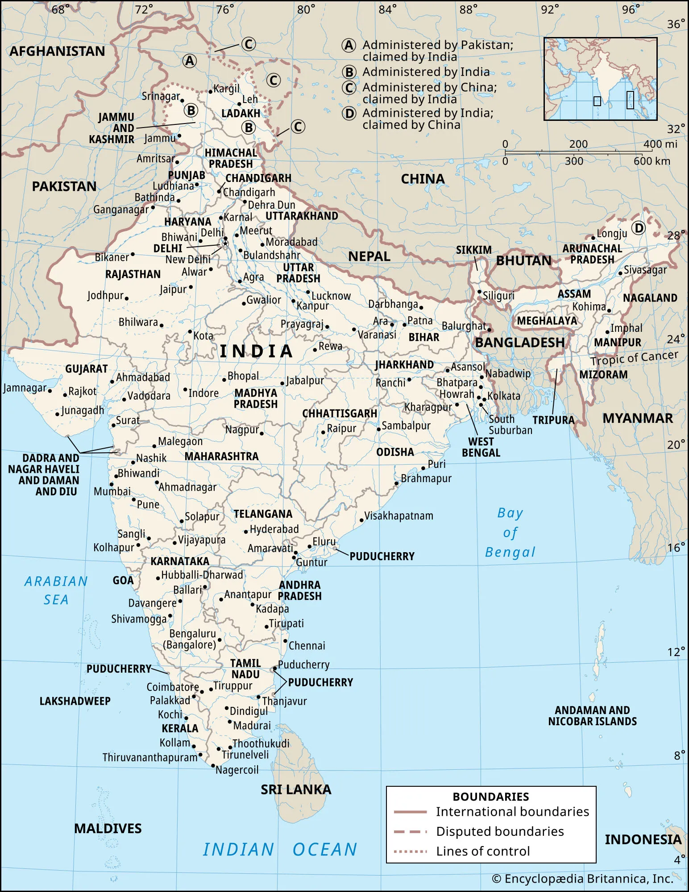
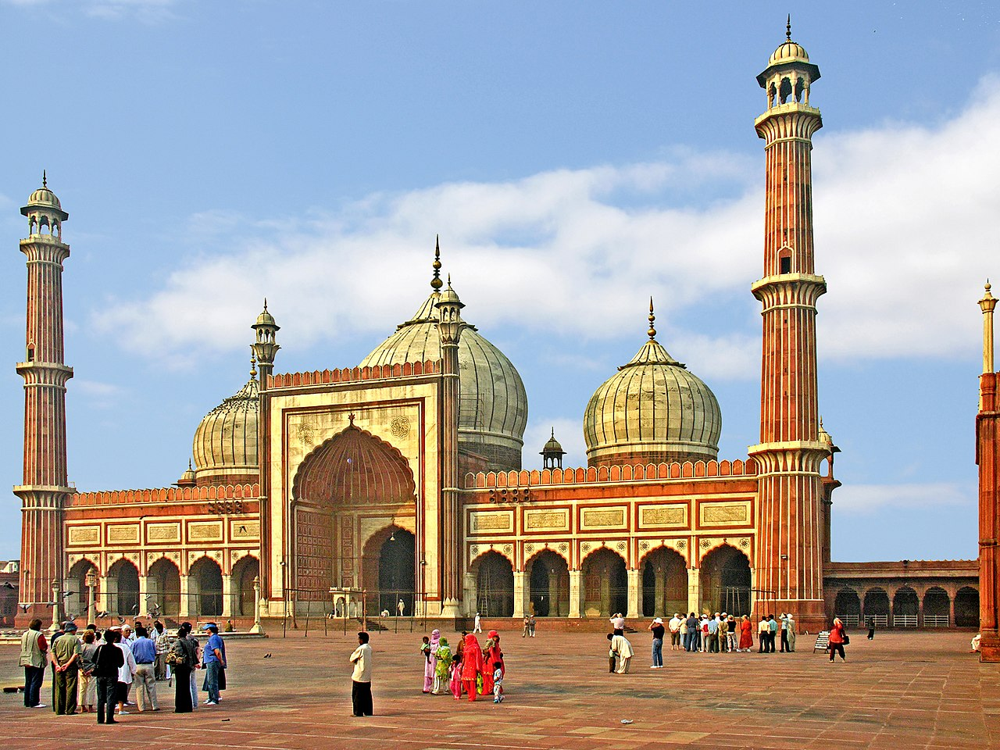
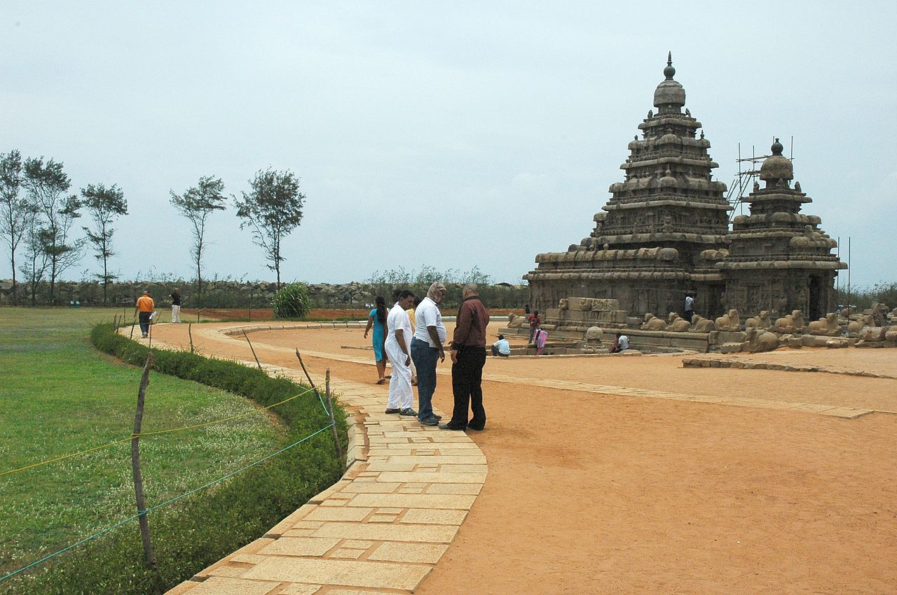

India (Hindi: भारत or Bhārat), the largest country in South Asia, has many of the world's highest mountains, most populated cities, and longest rivers. As one of the great civilisations of the ancient world, India's heritage and culture is a rich amalgam of the past and present. This vast country, the most populous in the world, offers the traveller a view of fascinating religions and ethnography,a smorgasbord of languages, diverse food, and architectural masterpieces that were built millennia ago and remain intact today. As the nation opens up to a globalised world, India still has a depth of history and intensity of culture that awe and fascinate the many who visit there.
History
The Indus Valley Civilisation (3300-1300 BCE) was one of the world's first Bronze Age civilizations and very advanced for its time. At its peak (2600-1900 BCE) it covered most of what is now Pakistan, plus some of northern India and eastern Afghanistan. The two biggest archaeological sites, both in Pakistan, are Mohenjo-daro and Harappa.
Some time after 2000 BCE, the Aryans, herdsmen from somewhere to the northwest, migrated into the region. At about the same time, related groups invaded Greece (Hellenic Greeks displacing Minoans), Anatolia or Turkey (the Hittites), Persia and other areas. It is believed that all these tribes spoke related languages and many modern languages, including most of those spoken in northern India, Europe and some in Central Asia, are descended from them. Linguists classify them all in the Indo-European language family.
The Vedic Period is dated to roughly 1500-500 BCE. This was the period when the Vedas, the oldest and holiest books of Hinduism, were compiled. They were in an Indo-Aryan language, Vedic Sanskrit. Although few details and archaeological findings are available for this period, many rituals of Hinduism took shape during that period.
The Vedic civilisation influences India to this day through the dharmic religions. Present-day Hinduism traces its roots to the Vedas, but is also heavily influenced by literature that came afterward, ranging from the Upanishads and Puranas to the great epics — Ramayana and Mahabharata. By tradition, these texts are claimed to only expand and distill the knowledge that is already present in the Vedas.
A section of the Mahabharata called the Bhagavad Gita is among the most widely read works. The Gita is said to be a concise summary of the four Vedas of Hinduism. Kaal (Kshar Brahm) is said to have described the knowledge of Gita in 700 verses of 18 chapters after entering Krishna's body. It is a dialogue, just before a great battle at Kurukshetra between the hero Arjuna and the God Krishna who serves as his charioteer. Today Kurukshetra is a destination for both pilgrimage and tourism.
In the 1st millennium BCE, various schools of philosophical thought developed, enriching Hinduism greatly. Most of them claimed to derive from the Vedas. However, some of these schools, two of which were Buddhism and Jainism, questioned the authority of the Vedas, and they are now recognised as separate religions.
Many great empires arose between 500 BCE and 590 CE. Notable among them were the Mauryas and the Guptas, both with their capital in the city of Pataliputra, now called Patna. The Gupta Empire (3rd century CE to 590 CE) is often called the Golden Age of India. Further west, the Gandharan civilisation (an independent kingdom, later part of the Maurya Empire) ruled much of what are now Pakistan and Afghanistan. Their city Taxila was a great centre of Buddhist and other learning.
Over time there was a gradual decline of Buddhism and Jainism. The practice of Buddhism, in particular, disappeared from India's heartland, though Buddha himself was incorporated into the Hindu pantheon. Jainism continues to be practised by a significant minority who are ambivalent about whether they consider themselves Hindus or not. Hinduism itself went through major changes. Vedic deities such as Indra and Agni became less important while Puranic deities such as Vishnu, Shiva, their various Avatars and family members gained prominence.

Islamic incursions started in the 8th century. Gradually the raiders started staying as rulers, and soon much of North India was ruled by Muslims. The most important Muslim rulers were the Mughal Empire that at its peak covered almost the entire subcontinent (save the southern and northeastern extremities), while the major Hindu force that survived in the North were the Rajputs. The bravery of the Rajputs in resisting invasion of their land is legendary and celebrated in ballads all over the forts of Rajasthan. Prominent among the Rajputs was Maha Rana Pratap, the ruler of Chittorgarh, who spent years in exile fighting Akbar, the third of the Mughals. Eventually, however, the Rajputs were subdued. Some Mughal armies had a high proportion of Rajput officers, although some Rajput rebellions still occurred during the reign of Jahangir, Shah Jahan and Aurangzeb. This period of North India produced the monumental gems of Rajasthan and the Taj Mahal. Hindi and Urdu also took root in medieval North India. During the Islamic period, there were Hindus that converted to Islam, often forcibly, or to avoid the Jizya tax, as told by Muslim chroniclers. Today, around 15% of India's population follow Islam.
Sikhism, another major religion, was established in Punjab during the Mughal period. Relations between Sikhism and the Mughals varied over time. The Golden Temple at Amritsar was built and recognised all over the world as Sikhism's foremost pilgrimage centre. By the time of its tenth Guru however, Guru Gobind Singh, relations were hostile, primarily due to the antagonism of Aurangzeb, the most intolerant, brutal and bigoted of the Mughals. Conflict between the Sikhs and the Mughals was one of the causes for the eventual decline of the Mughal Empire. Another reason was the rise of the Maratha Empire in Maharashtra, which was started by Shivaji and carried on by the Peshwas. The Marathas established a short-lived confederacy that was almost as large as the Mughal Empire. Marathas lost their command over India after the third battle of Panipat, which in turn paved a way for British colonialism.

South India followed a different trajectory, being less affected by Islamic rule. The period from 500 to 1600 CE is called the classical period and was dominated by great South Indian kingdoms. The most prominent empires included the Chalukyas, Rashtrakutas and Vijayanagara who ruled from present day Karnataka and the Pallavas, Cheras, Pandyas and Cholas who ruled from present day Tamil Nadu and Kerala. Among them, the Cholas, who ruled from various capital cities including Thanjavur and Gangaikonda Cholapuram, are widely recognised to be the most powerful of the South Indian kingdoms, with their territory stretching as far north as Pataliputra and their influence spreading as far east as Sumatra, western Borneo and southern Vietnam at the height of their power. Some of the grandest Hindu and Jain monuments that exist in India were built during this time in South and East India.
Northeast India was also fairly isolated from the rest of the country until the colonial period. The largest and longest kingdom to rule over the Northeast were the Ningthouja dynasty (33–1891 AD) of Manipur, followed by the Ahoms who, from the 13th to 19th centuries, successfully defended Assam and neighbouring regions from Mughal expansion.
European traders started visiting India beginning in the late 16th century. Prominent among these were the British, Dutch, French and the Portuguese. The British East India Company made Calcutta their headquarters in 1772. They also established subsidiary cities like Bombay and Madras. Calcutta later went on to become 'the second city of the empire after London'. By the 19th century, the British had, one way or the other assumed political control of virtually all of India, though the Portuguese, the Dutch and the French too had their enclaves along the coast. The British would send Indian labourers, policemen and soldiers all over the Empire, resulting in the establishment of Indian diaspora communities, the most notable ones in Myanmar, Malaysia, Singapore, Hong Kong, Fiji, South Africa, Mauritius, Kenya, Guyana, Trinidad and Tobago and the United Kingdom itself.
There was an uprising by Indian rulers in 1857 which was suppressed, but which prompted the British government to take over from the Company and make India a part of the empire. This period of rule by the crown, 1858–1947, was called the British Raj. It was a period in which some Indians converted to Christianity, though forcible conversions ended in British India after 1859, and Queen Victoria's proclamation promised to respect the religious faiths of Indians.
Non-violent resistance to British colonialism led by Mohandas Karamchand Gandhi led to independence on 15 August 1947. However, independence was simultaneously granted to the secular Hindu-majority state of India and the smaller Muslim-majority state of Pakistan, and the orgy of Hindu-Muslim bloodletting that followed Partition led to the deaths of at least half a million and the migration of 12–14 million people.
India achieved self-sufficiency in food grains by the 1970s, ensuring that the large-scale famines that had been common are now history. However these policies also led to shortages, slow growth and large-scale corruption. After a balance-of-payments crisis in 1991, the country adopted free-market reforms which have continued at a steady pace ever since, fueling strong growth. The IT, Business Process Outsourcing and other industries have been the drivers for the growth, while manufacturing and agriculture, which have not experienced reforms, are lagging. About 60% of Indians live on agriculture and around 36% remain in poverty.
Relations with Pakistan have been frosty. The two countries have fought four wars, three of them over the status of Kashmir. The third war between the two countries in 1971 resulted in East Pakistan becoming Bangladesh. India continues to experience occasional terrorist attacks, many of which are widely believed to originate in Pakistan and be ordered or assisted by its military-intelligence complex.
China and India went to war in 1962 over a Himalayan border dispute. Current relations are largely peaceful but tense. There are no land crossings allowed between the two countries, though one border crossing between Sikkim and Tibet was re-opened in 2006 for trade. Security concerns over Pakistan and China prompted India to test nuclear weapons twice (including the 1974 tests described as "peaceful explosions"). India wants to be accepted as a legitimate nuclear power and is campaigning for a permanent Security Council seat.
India is proud of its democratic record. Constitutional government and democratic freedoms have been safeguarded for most of its time as an independent country.
Current concerns in India include corruption, poverty, overpopulation, pollution and forms of environmental degradation, ongoing border disputes with Pakistan and China, cross-border terrorism, and ethnic, political and religious strife which occurs from time to time. India's current obsession, at least among the educated elite, is over whether India will be able to overtake China in economic growth and be an economic and military superpower. Today, many Indians regard their country to be the voice of the entire Global South in international politics.
Geography
India covers an area of 3,287,263 square kilometres (1,269,219 sq mi), making it the world's seventh-largest country, the third-largest country in Asia (if you count Russia), and the largest country in South Asia. India is three times smaller than the United States, half the size of Australia, and nearly 11,000 times larger than Asia's smallest country, the Maldives.
Mountains, jungles, deserts and beaches, India has it all. It is bounded to the north and northeast by the snow-capped Himalayas, the tallest mountain range in the world. In addition to protecting the country from invaders, they also feed the perennial rivers Ganga (Ganges), Yamuna (Jamuna) and Sindhu (Indus) on whose plains India's civilization flourished. Though most of the Sindhu is in Pakistan now, three of its tributaries flow through Punjab. The Ganga has two distributaries, of which the Bhagirathi-Hooghly runs over India and is the lifeline of West Bengal. Both distributaries eventually meet at the Bay of Bengal, forming both the largest river delta and the largest mangrove forest in the world.
The other Himalayan river, the Brahmaputra, flows through the northeast, mostly through Assam, where it is known by different names. The Manipur River, originating in Manipur, joins the Chindwin-Irrawaddy River System of Myanmar.
South of Punjab lies the Aravalli range, which cuts Rajasthan into two. The western half of Rajasthan is occupied by the Thar desert. The Vindhyas cut across Central India, particularly through Madhya Pradesh and signify the start of the Deccan plateau, which covers almost the whole of the southern peninsula.
The Deccan plateau is bounded by the Western Ghats range (which is called Sahyadri in Maharashtra) to the west and the Eastern Ghats to the east. The plateau is more arid than the plains, as the rivers that feed the area, such as the Narmada, Godavari and the Kaveri, run dry during the summer. Towards the northeast of the Deccan plateau is what used to be a thickly forested area that covers the states of Chhattisgarh, Jharkhand, the eastern edge of Maharashtra and the northern tip of Andhra Pradesh. This area is still forested, poverty stricken and populated by tribal people. This forest acted as a barrier to the invasion of South India.
The world's only floating lake is Loktak Lake in the central bowl like plain of Manipur. It is remarkably known for its unique circular floating biomasses
The Manipur River, originating in Manipur, joins the Chindwin-Irrawaddy River System of Myanmar.
South of Punjab lies the Aravalli range, which cuts Rajasthan into two. The western half of Rajasthan is occupied by the Thar desert. The Vindhyas cut across Central India, particularly through Madhya Pradesh and signify the start of the Deccan plateau, which covers almost the whole of the southern peninsula.
The Deccan plateau is bounded by the Western Ghats range (which is called Sahyadri in Maharashtra) to the west and the Eastern Ghats to the east. The plateau is more arid than the plains, as the rivers that feed the area, such as the Narmada, Godavari and the Kaveri, run dry during the summer. Towards the northeast of the Deccan plateau is what used to be a thickly forested area that covers the states of Chhattisgarh, Jharkhand, the eastern edge of Maharashtra and the northern tip of Andhra Pradesh. This area is still forested, poverty stricken and populated by tribal people. This forest acted as a barrier to the invasion of South India.
The world's only floating lake is Loktak Lake in the central bowl like plain of Manipur. It is remarkably known for its unique circular floating biomasses